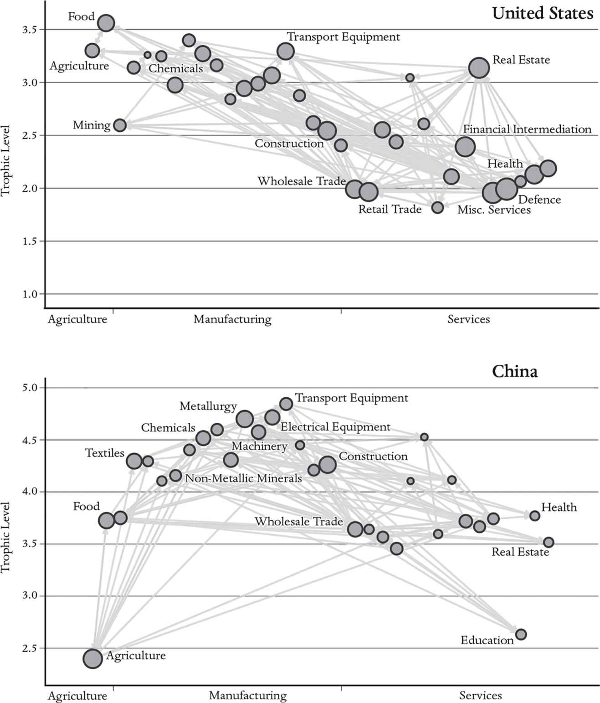
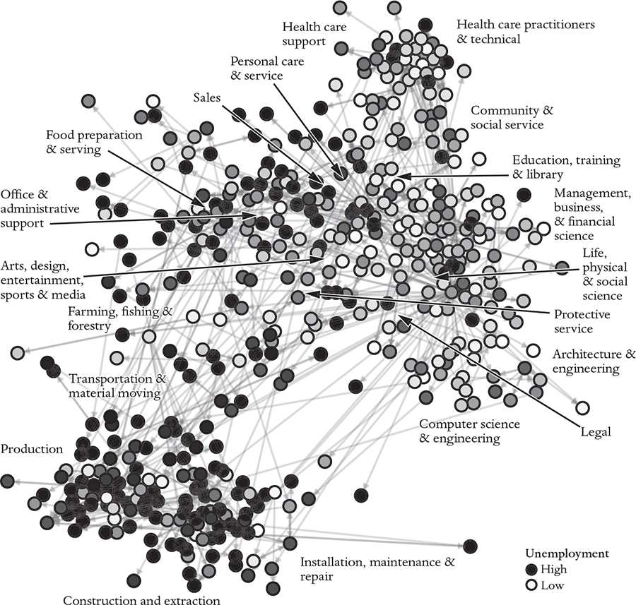

To produce a laptop, raw materials are extracted from every continent except Antarctica, transported to other locations and processed to make composite materials. These in turn are used to make the individual parts that are then combined and assembled elsewhere to create the laptop. The process involves many firms in different industries. Each industry makes its product and sells it to another industry further downstream. The final product, the laptop, is both a consumer good and an intermediate item used to make other products: Engineers use laptops to design many things, including new laptops. This is one of many loops in the production network. Though we often refer to pieces of the production network as supply chains, this is a bad metaphor: The production network is full of branches and is more like a tangled web than a chain.
The physical inputs for laptop production are only part of the story. A laptop is designed by engineers, who work for companies that get started by raising capital, which comes from investors, including bankers and other financiers. Once it’s made, a laptop must be transported, distributed and marketed. The engineers, fabrication facilities and computer stores are all housed in buildings, so we must include the construction industry among the inputs. The buildings sit on land, so we must include real-estate companies. Manufacturing requires energy, so we have to include that, too, not to mention the janitors, cooks in the company cafeterias, accountants and lawyers, the occasional plumber to unclog a toilet – the list is long. Every industry is connected to many other industries, and the connections loop back on themselves: Accountants, real-estate agents and engineers all use laptops to do their jobs.
The making of a laptop illustrates how the economy operates like a big metabolism. The production network has a structure similar to the proto-life model described earlier. Their definitions are the same except for a change in noun phrases:
A metabolism is a network of chemical reactions that transforms a food set of chemical inputs into other chemicals that provide energy and raw materials for living cells.
A production network is a network of firms that transforms natural resources and labor into goods and services for consumers.
The economy coordinates the labor of billions of people, so that each network component is available when and where it is needed.
There is an essential difference between production networks and biological metabolisms: In biology, metabolisms are localized within each organism and ecologies are built from the interactions between organisms. But the economy is structured as if it were one big superorganism, with a single metabolism. The metabolism of this superorganism operates through the actions of an ecology of specialists, each of whom the metabolism supports. This remarkable circular process thrives on the specialization of its goods and services and the specialization of the labor required to produce them.
By 1925, post-revolutionary Russia was becoming increasingly dangerous for Wassily Wassilyevich Leontief. A man from a wealthy family, he’d already been arrested several times by the Cheka secret-police because of his campaigning in support of academic autonomy and freedom of speech. With the net closing ever tighter, he feigned an untreatable terminal illness that led the authorities to take pity on him and allow him to spend his final months in the West. Having escaped the Soviet Union, he eventually made his way to Harvard where he carried out groundbreaking work on production networks.
Leontif took seriously Adam Smith’s observation that specialization is an essential feature of an economy and made a mathematical model for how individual industries in specialized roles interact to create economic output.11 He was one of the first economists to embrace the digital age: In 1949 he used an early computer, the Harvard Mark II, to solve a system of linear input-output equations that divided the economy into 500 industries. This was quite a feat at the time. (Since then, the field has in a sense gone backwards – typical models now only use between 40 and 100 industries.) His systems of equations were effectively network models of the economy. Though no one used the term while he was alive, and he was part of the mainstream, I consider Leontief a pioneer of complexity economics.
The nodes of Leontief’s production network are industries, comprising different firms that make a family of products (like automobiles) that can be lumped together and treated as if they were a single product. The products can be physical goods (like screws) or services (like pizza delivery). Each industry buys products from other industries, converts them to make a new product, and sells them, in turn, to households or other industries. The links between the nodes are the inputs required to produce each product. Money flows in the opposite direction to products: Physical goods flow from suppliers to customers; customers pay their suppliers.12
Leontief’s model assumes that each product is produced via a ‘recipe’ (called a production function in economics) that specifies how much of each input is needed to make the output. This can be measured in monetary terms as the value of the products that companies buy and sell. Leontief’s original model makes some strong assumptions, such as setting markups (the difference between revenues and costs) to zero and assuming that the economy exists in a steady-state equilibrium. Neither of these assumptions is true, but they provide a crude approximation that makes it possible to solve the resulting equations for the prices of all the products. These equations closely resemble those that Rick and I used (and that biochemists use) to understand metabolisms.
Given his status as a defector, it is ironic that the Soviets were perhaps the biggest beneficiaries of Leontief’s equations, which they used to make the pieces of a planned economy fit together. Leontief’s equations solve the chicken-and-egg problem caused by the many positive-feedback loops in the production network. For example, the Soviets desperately wanted to increase steel production. To do this, they had to build up the industries that provide inputs to the steel industry, such as iron, coal and railways. But building railways requires steel, as do the machines for extracting iron and coal. Thus, to increase steel production, you need to increase steel production. Leontief’s methods helped solve this conundrum and allowed the Soviet planners to invest in each industry so as to increase production as quickly as possible.13
In economics, models of the production network with multiple industrial sectors are usually called input-output models. The mainstream interest in input-output models has ebbed and flowed over the last seventy years. For two decades following Leontief’s pioneering work, there was a major effort to predict the behavior of the economy using input-output models with hundreds of industrial sectors. This was not very successful, and, as we will discuss in Chapter 5, in the 1970s macroeconomics took off in a very different direction. Detailed models of the production network were abandoned, and by the turn of the millennium they had become a footnote in macroeconomics textbooks.
Meanwhile, in the 1990s, my colleague H. Eugene Stanley from Boston University and some other physicists started a new movement they called econophysics, promoting a physics-style approach to understanding the financial system and the economy. One of the early econophysics papers from Gene’s group pointed out that the year-to-year fluctuations in the growth of large companies behave in a very peculiar manner.14 The ‘law of large numbers’ suggests that fluctuations in output should average out when we consider the economy as a whole, but this is not what happens – the fluctuations are much larger than one would normally expect. The French-American economist Xavier Gabaix postulated that this is due to the extreme variation in the size of companies, and he used input-output models to develop his theory.15 Gabaix’s work led to a rekindling of interest in input-output models, which have now branched out in other directions.
Static models of production networks are one of the branches of economics where mainstream economics and complexity economics overlap. The model I am about to describe has much in common with models that are currently popular in the mainstream. Nonetheless, because my colleagues and I started in a different place, taking our inspiration from ecology, we came at the problem in a different way and found ways to apply Leontief’s model that mainstream economists missed.
The second graduate student who played an important role in my work on production networks is James McNerney. James, a physics student, wanted to work on something relating to economics and was particularly interested in the economics of climate change. He came from Boston University to the Santa Fe Institute in 2008 and spent several years there working with me. Ecology was always well represented at SFI, and this led James and me to think about whether we could apply concepts from ecology to economic production networks.
We were particularly interested in how technological improvement in one product might cascade through the production network and result in technological improvements in other products. James extended Leontief’s equations by adding a simple model for technological progress, assuming that the net result of progress is that the same output is made with less of each input. The links in the production network remain the same, but their weight decreases in response to each industry’s progress, and as inputs go down, so do product prices.16 (In reality technological progress has many other effects, but it is often useful to start simple.)
Our idea was based on the ecological concept of a food chain. Imagine a simplified ecology consisting of lions, zebras and grass, and assign each species a trophic level – a numerical rating based on their place in the food chain. Since grass gets its energy directly from the Sun and the atmosphere, it is usually assigned a trophic level of 1. Zebras eat grass, so they get a trophic level of 2. Lions eat zebras, so they get a trophic level of 3.
The real world is more complicated. Organisms like humans and pigs are omnivorous, eating at multiple levels in the food chain, and decomposers (like worms eating a lion’s corpse) create loops. In reality, the food chain is actually a food network. Nonetheless, it’s possible to assign trophic levels, even in such messy situations, through a set of equations stating that the trophic level of each species in an ecology is one more than the weighted average of the trophic levels of the things it eats. The resulting trophic levels are no longer whole numbers, but they’re still helpful in understanding how a disturbance – for example, the removal of a top predator by overfishing – affects other species.
We saw that we could compute trophic levels for industries in the same way. The production network is analogous to a food web. In a food web, the nodes are species and the links correspond to what they eat; in the production network, the nodes are industries and the links correspond to their inputs. While households can be viewed as an ‘industry’, they play a special role – they are the end-users of the economy.17 James and I made households the reference point (like the Sun in a food web) and assigned them a trophic level of zero.
In economics, the trophic level of an industry can be thought of as the depth of its supply chain. It measures the number of steps required to make an industry’s product.18 An industry whose only input is labor has a trophic level of 1, because its only input comes from households, which by definition have a trophic level of zero. An industry with inputs from industries other than labor automatically has a trophic level greater than 1. An industry has a high trophic level if the fraction of its inputs from labor are small and if its other inputs have high trophic levels. Service industries tend to have low trophic levels and manufacturing industries tend to have high trophic levels. (Note that the trophic level is essentially the same as what is called an output multiplier in economics, though we used the concept here differently than in earlier work.19)

Figure 3 compares the production networks for the United States and Chinese economies. The trophic level of each industry is plotted along the vertical axis, while the horizontal axis places industries according to a standard industrial classification scheme. Plotting the data this way makes some key differences between the two economies obvious at a glance.
One of the most striking differences evident in Figure 3 is that on average the trophic levels of Chinese industries are higher than those of US industries. There are two reasons for this. One is that the Chinese economy is much more heavily concentrated in manufacturing industries. In China, manufacturing industries such as Electrical Equipment or Metallurgy play a big role in the economy; they tend to have high trophic levels because there are many steps in their production. In contrast, the United States concentrates heavily on industries with shallow supply chains such as Miscellaneous Services or Health.
The second reason trophic levels of Chinese industries are higher is that they pay their workers lower wages. Since labor is a smaller fraction of the cost of the inputs, the contribution of the household sector is lower. This means that the relative amount paid for manufactured inputs is higher, which raises the trophic level of industries in China.
It is also interesting to compare specific industries: American agriculture, for example, has a high trophic level, reflecting a high degree of mechanization. The US industry with the highest trophic level is Food, because Agriculture, by far its biggest input, already has a high trophic level. In China, Agriculture is highly labor intensive, giving it a lower trophic level, like that of service industries.
But what does trophic level have to do with technological innovation and economic growth? Economic growth depends on technological innovation. What James realized is that, since innovations are passed along the supply chain, products made by industries with high trophic levels will tend to improve faster than products made by industries with low trophic levels. Think about laptops: The cost of making a laptop depends on the whole industrial ecosystem that supports it from below. If the tantalum-mining industry becomes more efficient, this will drive the cost of tantalum down, so memory-chip manufacturers pay less for tantalum, which lowers the cost of memory chips. If the manufacturers improve the chip-manufacturing process, this lowers costs even more, and so on, all the way up the supply chain. We showed that this causes an amplification effect: Improvements combine multiplicatively as one moves up the supply chain. In contrast, for a service-intensive industry whose only input is labor, there are no improvements passed on from the rest of the economy. Any improvements must come from that industry itself – the only way to innovate is to use labor more efficiently.
The typical industry improves more due to the effort of its suppliers than it does due to its own effort. James showed that 65 per cent of improvements in a given industry come from other industries – or, alternatively, only 35 per cent of the improvements in a typical industry come from within the industry itself. Thus, if all industries innovate at the same rate, and if all else is equal, industries with a higher trophic level will improve faster than industries with a lower trophic level. This is because an industry with a deeper supply chain has more industries below it to provide it with innovations.
We tested our hypothesis on data for thirty-five industries in forty countries from 1995 to 2009. This database computed a price index for the products made by each industry in a given country, which gave us an overall measure of improvement based on lower prices to buy the same thing, adjusted for changes in quality. For example, if laptops get faster and have more memory but sell for the same price, the price index will drop, to account for the improved quality. When the price index drops, this means that the product has either become cheaper, or better, or some combination of the two, but in any case it signifies the overall level of improvement.
We tested our hypothesis by forecasting changes in the price index, taking advantage of the fact that trophic levels change very slowly – so slowly that they can be treated as constant over the fourteen years between 1995 and 2009. We showed that the trophic level of a given industry in a given country in 1995 predicts how much its products will have improved fourteen years later. Since there are other factors influencing improvement, the individual predictions are by no means perfect, but they worked extremely well: The average improvement for a given industry in a given country increases proportional to trophic level, as we predicted, and our hypothesis is strongly confirmed with extraordinarily high levels of statistical significance. This helps explain some well-established economic facts, such as why manufacturing industries tend to improve faster than service industries, as originally noted by NYU economist William Baumol.20
Trophic levels also predict the growth rates of countries. Let’s call the average trophic level of the industries of a given country the trophic level of that country. According to our model, the growth in GDP of a country should be proportional to its trophic level. (As before, it is necessary to add ‘if all else is equal’, because there are many other factors that influence GDP growth.) When we tested our hypothesis at the country level on the same data set, countries with higher trophic levels in 1995 tended to have higher GDP growth over the next fourteen years, just as predicted. From 1995 to 2009, US GDP grew by about 1.5 per cent annually, while Chinese GDP grew by 8.7 per cent annually. How much of this difference can be explained by trophic level? According to our model, about 30 per cent of China’s growth advantage over the US between 1995 and 2009 is due to its higher trophic level in the global economy, and the rest is explained by other factors.21
Thinking in terms of trophic levels leads to an interesting hypothesis about development paths. Although trophic levels change slowly, over many decades, they change in economically important ways. In his PhD thesis, one of my other students, Charles Savoie, estimated how the trophic level of the US economy had changed over time from 1790 to the present.22 Bearing in mind that data from earlier years is limited and unreliable, the story goes like this: In 1790, the trophic level of the US economy was about 3.2, with trophic level and per-capita GDP roughly equivalent to that of present-day Bulgaria. By 1900, the trophic level had increased to about 4 as the manufacturing sector grew. The trophic level then remained more or less constant until roughly 1950, while per-capita GDP grew, and then began to steadily decline to its current value of 2.5, as manufacturing was increasingly replaced by services.
Will modern-day developing countries on the industrial growth path evolve in the same way? China’s current per-capita GDP is a bit lower and its trophic level a bit higher than those of the United States in 1900. At present, China’s high trophic level helps the Chinese economy grow rapidly, but if it follows in our footsteps, GDP will eventually grow more slowly as the country’s trophic level drops due to higher wages and the replacement of manufacturing by services.
One of the most striking aspects of our predictions is that they don’t depend on human behavior, at least directly.23 The trophic level is a structural property of the economy. Our theory assumes the structure of the network is given. Because our predictions are independent of any assumptions about decision-making, they are robust.24 In contrast, standard models require an assumption that firms maximize their utility, which must take a particular mathematical form, and assume a particular mathematical formula for the production function.25
Adam Smith argued that specialization makes the economy work better. Our work here shows that specialization also boosts the rate of innovation in the economy. This happens automatically: Each industry in the production network can count on the rest of the economy to improve its inputs and provide it with new technologies that will allow improvements in its own processes. Improvements in an industry with a higher trophic level automatically happen faster, even if innovations in that industry happen at the same rate as in other industries.
Our extension of Leontief’s model assumes that the rate of improvement for each technology is constant in time, so the result is, like his, a static model. In the next chapter, we’ll discuss the development of a dynamic, agent-based model, using principles very different from those that govern equilibrium-based models. (An example was already given in the Prologue.)
In 2012, I was invited by Eric Beinhocker to come to the University of Oxford. Eric had been a regular visitor at the Santa Fe Institute, and his 2007 book, The Origin of Wealth, described the problems of mainstream economics and included a discussion of work by me and others in complexity economics.26 He had received a grant from George Soros to start a research group that would take a new approach to economics, and he wanted me to join him and lead a program on complexity economics. My original appointment was as Director of Complexity Economics at the Institute for New Economic Thinking at the Oxford Martin School, which is a cross-disciplinary organization devoted to funding science to help solve the big problems of society. But it’s not an academic department, and before I could be appointed I had to become attached to a university department. Somehow, I ended up in Oxford’s mathematics department, even though I’ve never published anything in the field of mathematics, but I have since moved to the Smith School for Enterprise and the Environment, where my title is the Baillie Gifford Professor of Complex Systems Science. I eventually got an offer to be a Senior Research Fellow in Christ Church College, where one of the fun perks is wearing a black gown and sitting at ‘high table’ in the dining hall that the Harry Potter movies used as a template. Oxford is a long way from Santa Fe, in many respects.
Because my position at the Oxford Martin School is supported with outside funding, I don’t have teaching responsibilities, which gives me more time for research. However, I do advise graduate students, which suits me perfectly. Oxford attracts excellent students from all over the world; I enjoy collaborating with them, and my productivity has soared as a result. Since my arrival, I have been steadily building up my group, and I now have about fifteen graduate students from a variety of disciplines. Most of them approached me because they wanted to do economics but weren’t happy with the approach of traditional economics departments.
The work that two of my best students, Penny Mealy and Maria del Rio-Chanona, have done on understanding labor transitions provides a good example of complexity economics. Penny, who now works at the World Bank, was my graduate student and postdoc at Oxford, where she was based in the geography department. Maria originally studied physics at Universidad Nacional Autónoma de Mexico, but moved to mathematics when she came to Oxford to do her graduate work with me.
In the coming decades, we will experience two major economic transitions – automation (including artificial intelligence) and the green-energy transition – which are unfolding in parallel. In addition to changing the way we produce things, they are also causing seismic shifts in the workplace that will dramatically alter the occupational landscape and determine the future of work for the next generation. We have developed economic models to help navigate these transitions.
Consider the dilemma faced by coal miners. As coal mines close, miners need to find new jobs. You might think the simple solution would be to train them to operate solar farms, but the best sites for solar farms are usually far from coal mines, and the required job skills are different, so this seemingly easy solution doesn’t make sense. Instead, data on labor transitions tells us that coal miners are more likely to become construction-equipment operators or truck drivers, and workers for solar farms are more likely to come from power plants or structural iron and steel mills. As these transitions happen, they alter the supply and demand for labor in each profession, causing changes that propagate through the workforce. Because everything depends on everything else, nothing can be understood in isolation. To understand how the occupational-labor network will evolve with automation and the green-energy transition, we need a more holistic view.
We have built an agent-based model that tracks the supply and demand for labor within individual occupations, showing how the labor ecosystem adapts to changes in the economy. The model helps answer questions such as, ‘Which occupations will be most affected?’ or ‘How much unemployment will this cause?’ or ‘What kind of workforce training would be most effective?’ It also suggests how the lack of skilled labor for particular industries might affect production. For example, to minimize climate change, we need to make the green-energy transition as fast as possible. Can the workforce adapt quickly enough without slowing down the green-energy transition? Penny managed an initial effort to get the lay of the land, and Maria headed the model’s development.
We began by taking snapshots in time, constructing a static network in which the nodes were occupations and the links were relationships between them. The links were based on the similarity of work activities – designing, say, or recruiting and hiring. This network, which we call the job space, is shown in Figure 4.27 The nodes are arranged so that occupations that share many work activities are close together. The similarity of work activities predicts the likelihood of job transitions between occupations better than methods previously proposed.

In Figure 4, the nodes in the job space are shaded based on the average unemployment associated with each occupation. This makes some patterns self-evident: For example, occupations in the technology or health care parts of the space have low unemployment rates, while jobs in the construction and mining part of the space have high unemployment rates. The diversity is striking: The unemployment rate for nurses is 0.1 per cent; for boilermakers it’s 25 per cent. The clustering of unemployment in the job space occurs because occupations that are close to each other share work activities, which means the supply and demand for their labor tend to be similar.
Static network plots provide a useful snapshot at any given point in time, but we wanted to be able to predict how the landscape would change. To do this, Maria built an agent-based model for the labor market.28 It simulates all the steps that workers take when they look for jobs. We start with a static network, but the model is dynamic: As before, each node represents an occupation, but the model also includes information attached to each node that describes the state of each occupation – number of workers, job vacancies – and calculates what happens month by month as workers are fired and new job vacancies are created based on that occupation’s current labor demand. Links are based on the frequency with which workers have changed occupations in the past.29 Workers apply for new jobs both in their current occupation and in other occupations. The relative rate that they apply for jobs in new occupations is based on data from the US census. To keep things simple, we assume that all workers applying for a position are equally likely to be hired. Workers in occupations with little competition find new employment quickly, but, if competition is stronger, finding a new job may take many months or even years. Whenever there are changes in labor demand in our model, the effects ripple through the job space, as each occupation affects its neighbors. The beauty of the dynamic model is that it allows us to keep track of interactions among occupations across the entire job space and understand how everything affects everything else.
To study how automation will affect occupations in the job space, we used predictions by our Oxford colleagues Carl Frey and Mike Osborne on the types of jobs that computerization will eliminate.30 It’s important to keep in mind that, historically, automation has not resulted in higher unemployment; instead, it has shifted employment from one occupation to another. For simplicity, we assumed that the Frey and Osborne predictions changed the relative demand for occupational labor without affecting the total demand for labor. We took their predictions as given and then studied how workers migrate across the job space as old jobs are eliminated and new jobs are created.
The simulations of the occupational-mobility model indicate that the transition will be far from uniform: There are regions of the network where workers easily find new jobs and others where jobless workers get trapped because there are no suitable alternatives, causing a substantial and persistent boost to average unemployment. In the model, average unemployment rises from about 5.3 per cent before the automation shock to 6.7 per cent at the peak of the transition. We compared our results to those based on a hypothetical ‘complete network’, which assumes workers can freely transition from any occupation to any other. In the hypothetical complete network, the unemployment bump is much smaller than our more realistic model predicts, starting at 4.1 per cent before the shock and peaking at only 4.7 per cent. This difference in predicted unemployment rates makes it clear that limits on occupational mobility in the real world amplify overall unemployment and help determine how long shifts in unemployment will last during a transition.
Our occupational-transition model predicts some counterintuitive effects. Dispatchers (like people who coordinate taxis31) and pharmacy aides both face the same high (72 per cent) probability of automation in their jobs, but the shifts in their long-term unemployment rates are quite different. The automation shock causes a 19 per cent increase in the long-term unemployment for dispatchers, while the pharmacy aides’ long-term unemployment decreases by roughly the same ratio. This is because, after the transition, there is more competition with workers from other occupations seeking jobs as dispatchers than for pharmacy aides (presumably because dispatchers require less training). The influx of new workers from other professions seeking jobs makes the job market for dispatchers more competitive. Similarly, even though child-care workers are directly unaffected by automation, their long-term unemployment increases by 6 per cent, because workers from many occupations undergoing automation can easily become child-care workers. These effects make sense once you think about them, but to get their magnitudes right requires a model like ours that takes all occupations into account at once.